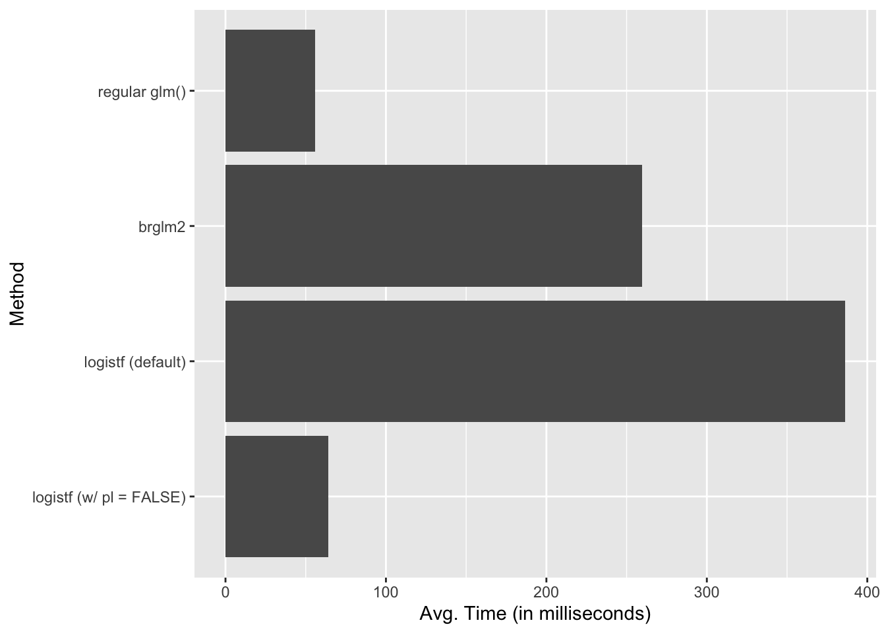

Benchmarking Firth’s Logit: {brglm2} versus {logistf}
logistf() is really fast
logistic regression
small samples
Firth
computing
R
In this post, I benchmark the brglm2 and logistf packages for fitting logistic regression models with Firth’s penalty.
Author
Carlisle Rainey
Published
August 11, 2023
Firth’s Logit
I like Firth’s logistic regression model (Firth 1993). I talk about that in Rainey and McCaskey (2021) and this Twitter thread. Kosmidis and Firth (2021) offer an excellent, recent follow-up as well.
I’ll refer you to the papers for a careful discussion of the benefits, but Firth’s penalty reduces the bias and variance of the logit coefficients.
Goals for Benchmarking
In this post, I want to compare the brglm2 and logistf packages. Which fits logistic regression models with Firth’s penalty the fastest?
These packages both fit the models almost instantly, so there is no practical difference when fitting just one model. But large Monte Carlo simulations (or perhaps bootstraps), small differences might add up to a substantial time difference.
Here, I benchmark the two packages for fitting logistic regression models with Firth’s penalty in a small sample–the results might not generalize to a larger sample. The data set comes from Weisiger (2014) (see ?crdata::weisiger2014). It has only 35 observations.
You can find the benchmarking code as a GitHub Gist.
Benchmarking
I benchmark four methods here.
A vanilla glm() logit model.
A Firth’s logit via brglm2 by supplying method = brglm2::brglmFit to glm().
A Firth’s logit via logistf via logistf() using the default settings.
A Firth’s logit via logistf via logistf() with the argument pl = FALSE. This argument is important because it skips hypothesis testing using profile likelihoods, which are computationally costly.
# install crdata package to egt weisiger2014 data setremotes::install_github("carlislerainey/crdata")# load packageslibrary(tidyverse)library(brglm2)library(logistf)library(microbenchmark)# load dataweis <- crdata::weisiger2014# rescale weisiger2014 explanatory variables using arm::rescale()rs_weis <- weis %>%mutate(across(polity_conq:coord, arm::rescale)) # create functions to fit modelsf <- resist ~ polity_conq + lndist + terrain + soldperterr + gdppc2 + coordf1 <-function() {glm(f, data = rs_weis, family ="binomial")}f2 <-function() {glm(f, data = rs_weis, family ="binomial", method = brglmFit)}f3 <-function() {logistf(f, data = rs_weis)}f4 <-function() {logistf(f, data = rs_weis, pl =FALSE)}# do benchmarkingbm <-microbenchmark("regular glm()"=f1(), "brglm2"=f2(), "logistf (default)"=f3(),"logistf (w/ pl = FALSE)"=f4(),times =100)
Warning in microbenchmark(`regular glm()` = f1(), brglm2 = f2(), `logistf
(default)` = f3(), : less accurate nanosecond times to avoid potential integer
overflows
In short, logistf is slower than brglm2, but only because it computes the profile likelihood p-values by default. Once we skip those calculations using pl = FALSE, logistf is much faster. On average, it’s faster than glm(), because glm() has the occasional really slow computation.
Here’s a plot showing the computation times of the four fits. Remember that all of these are computed practically instantly, so it only makes a difference when the fits are done thousands of times, like in a Monte Carlo simulation.
# plot timesbm %>%group_by(expr) %>%summarize(avg_time =mean(time)*10e-5) %>%# convert to millisecondsggplot(aes(x =fct_rev(expr), y = avg_time)) +geom_col() +labs(x ="Method", y ="Avg. Time (in milliseconds)") +coord_flip()

Follow-Up Notes
The models return slightly different estimates. Maybe they are using slightly different convergence tolerances. I didn’t investigate this beyond noticing it.
logistf has a C++ backend (thus explaining the speed).
brglm2 is written entirely in R. He noted that a new version is coming out soon that might be substantially faster. (brglm2 is also more general; it supports a variety of models and corrections).
Kosmidis, Ioannis, and David Firth. 2021. “Jeffreys-Prior Penalty, Finiteness and Shrinkage in Binomial-Response Generalized Linear Models.”Biometrika 108 (1): 71–82. https://doi.org/10.1093/biomet/asaa052.
Rainey, Carlisle, and Kelly McCaskey. 2021. “Estimating Logit Models with Small Samples.”Political Science Research and Methods 9 (3): 549–64. https://doi.org/10.1017/psrm.2021.9.
Weisiger, Alex. 2014. “Victory Without Peace: Conquest, Insurgency, and War Termination.”Conflict Management and Peace Science 31 (4): 357–82. https://doi.org/10.1177/0738894213508691.